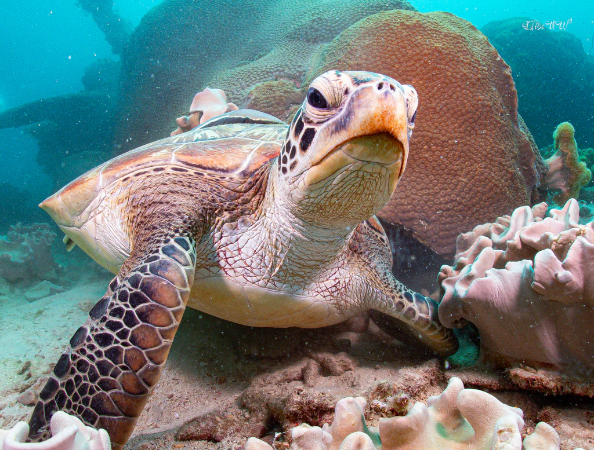
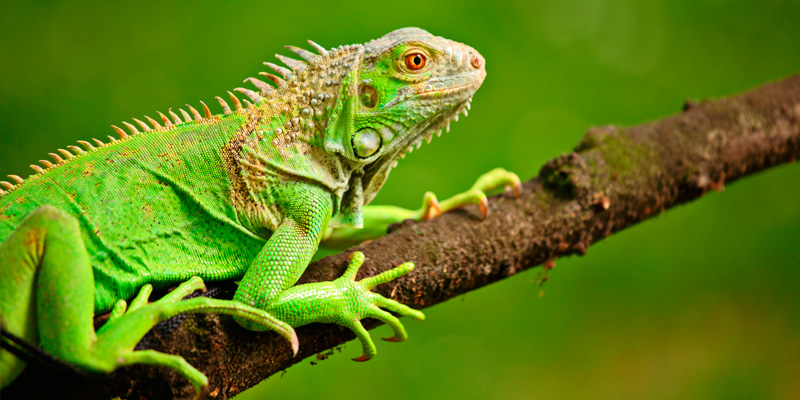
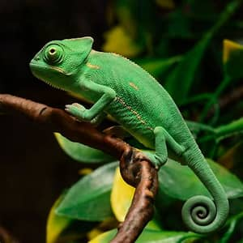
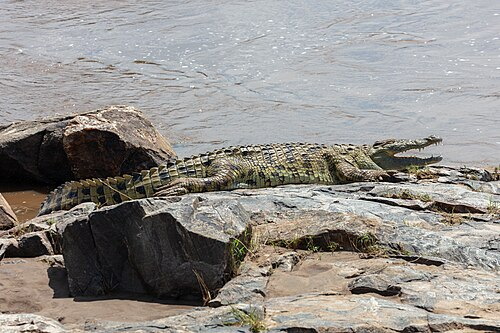
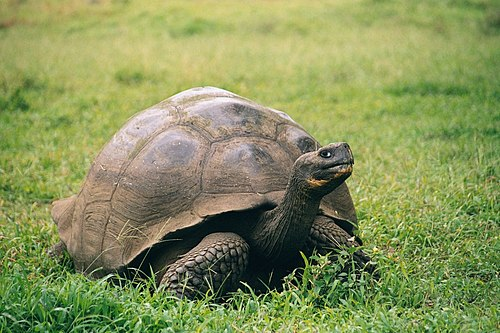

Tortuga marina (Chelonia mydas)
su habitat:Zonas tropicales de América Central y del Sur, cerca de ríos o lagos.
Alimentacion: Herbívora. Come hojas, flores y frutas.
un dato curioso:Puede regenerar parte de su cola si la pierde, y es excelente nadadora.
Informacion General: Reptil de cuerpo alargado y piel escamosa, con una cresta dorsal y cola fuerte. Pasa la mayor parte del tiempo en árboles y ramas altas.

Iguana verde (Iguana iguana)
habitat: Océanos tropicales y subtropicales. Prefiere aguas cálidas y poco profundas.
Alimentacion: Omnívora cuando es joven, y herbívora en su etapa adulta. Consume algas, medusas y pastos marinos.
un Dato curioso:Las tortugas marinas siempre regresan a la misma playa donde nacieron para poner sus huevos, guiadas por el campo magnético terrestre.
Informacion General: Reptil marino de caparazón ovalado y resistente. Realiza largas migraciones entre las zonas donde se alimenta y las playas donde desova.

Camaleón común
Hábitat: Bosques, selvas y zonas arbustivas de Madagascar y África oriental.
Alimentación: Insectos y pequeños invertebrados.
Dato curioso: Puede cambiar de color para comunicarse o camuflarse, y su lengua es más larga que su cuerpo.
Información general: Es un reptil diurno, muy ágil en los árboles y tiene ojos que se mueven de manera independiente.

Cocodrilo del Nilo
Hábitat: Ríos, lagos y humedales de África subsahariana.
Alimentación: Peces, aves, mamíferos y carroña.
Dato curioso: Es uno de los reptiles más grandes del mundo y puede vivir hasta 70-100 años.
Información general: Excelente nadador, cazador oportunista y tiene una mordida extremadamente potente.

Tortuga de Galápagos
Hábitat: Islas Galápagos, en terrenos áridos y zonas de vegetación baja.
Alimentación: Hierbas, cactus, frutas y hojas.
Dato curioso: Puede vivir más de 100 años, siendo una de las especies más longevas del planeta.
Información general: Su caparazón es grueso y resistente; se desplaza lentamente pero puede sobrevivir largos periodos sin agua.